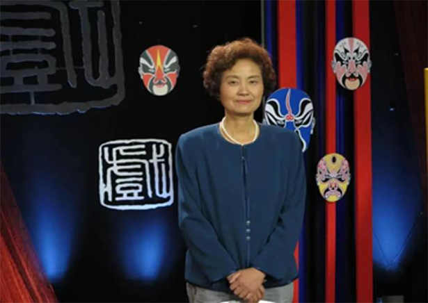

首批“四川省戏曲名家杜建华工作室”
2021-05-20

杜建华参加央视戏剧节目
《川剧传统剧目集成》《川剧剧目概论》《中华戏曲·川剧》《川剧史话》5月17日，四川省川剧理论研究会会长、四川省艺术研究院研究员杜建华来到位于成都的办公室，办公室里放着她这些年来写作的大量有关川剧书籍，和刚被授予的首批“四川省戏曲名家工作室”金属方牌。
杜建华的著作
今年4月，在四川省文化和旅游厅指导下，首批2022年度“四川省戏曲名家工作室”完成授牌，陈智林、肖得美、崔光丽、刘谊、李伯清、魏明伦、杜建华、陈巧茹、刘露、廖忠荣10位文艺工作者入选。杜建华作为戏曲川剧研究者的代表**，她透露了近期关于工作室的研究计划。
杜建华的工作室
“这是一份荣誉，是鼓励，更多的也是职责所在。”杜建华认为，被授予首批**“四川省戏曲名家工作室”对自己也是一份敦促，她已经做了40年的川剧研究，非常希望借名家工作室这个平台和机遇，继续做好川剧领域的理论研究工作：“这个领域有大量工作需要做，这是没有止境的”
在杜建华看来，其实四川有着非常丰富的传统文化资源，川剧作为其中的代表，更应该系统地将这些文化资源整理、收集和研究，目前这方面的系统性研究还很缺乏。川剧不仅仅是一场场戏，一次次演出，它其中包含的婚丧嫁娶、巴蜀风俗民风，都是四川文化珍贵的“活化石”。眼下，不少川剧绝技、传统戏，因为老一辈艺人离世，没法得到很好地保存，有的面临些失传的风险。为此，她也整理了上世纪50年代保留下来的不少川剧剧本，以《三国演义》《东周列国》《封神演义》《聊斋志异》《西游记》《明清传奇》等名著分类，目前仅《川剧传统剧目集成》中已经出版整理了200多个川剧剧本，共计30多万字。
《川剧传统项目集成》(部分)
这些剧本是通过从各民间院团等社会渠道收集过来，其中还有绝本和孤本。收集过来后，再被戏剧专业研究人士誊写、校对，之后还要交给具有丰富演出经验的川剧名家、老艺人把关审阅，加上剧本本身的曲牌名，杜建华说：“最终希望能达到一种民间剧团想用就能拿来演出用的程度。”同时，这些整理好的剧本也成为川剧保存的珍贵文本。杜建华计划，希望在工作室成立的最初三年内，整理好80至100个丑角剧本，与此同时还要完善明清时候的剧本，若进展顺利，未来也可连续为生角、花脸等行当准备的专门剧本推陈出新.
师傅领进门，修行看个人。目前杜建华也在有意识地培养戏曲，尤其是川剧领域的青年研究者。她目前和四川师范大学合作，邀请戏文相关专业的研究生和她一起整理川剧剧本，这些同学有的在整理川剧剧本的过程中找到了自己的论文兴趣点，有些同学在整理剧本的过程中吸取了川剧的长处和优点，培养起了创作剧本的能力，成为编剧。她也呼吁社会上广大对巴蜀传统文化，对川剧感兴趣的朋友，能够加入自己的工作室，大家一起为川剧传统文化的整理和搜集做出贡献。
她希望自己整理的剧本、技法、戏剧条目，一方面能为后来的研究者提供基础性的资料，也能把这些资料分发民营川剧团、地方川剧团等，为他们的表演和创作提供范本，输送源源不断地演出材料，也能为四川传统文化、巴蜀传统文化的整理和积累贡献自己的力量。“川剧表达着我们的四川文化，也带着我们一起寻根四川的文化脉络。”